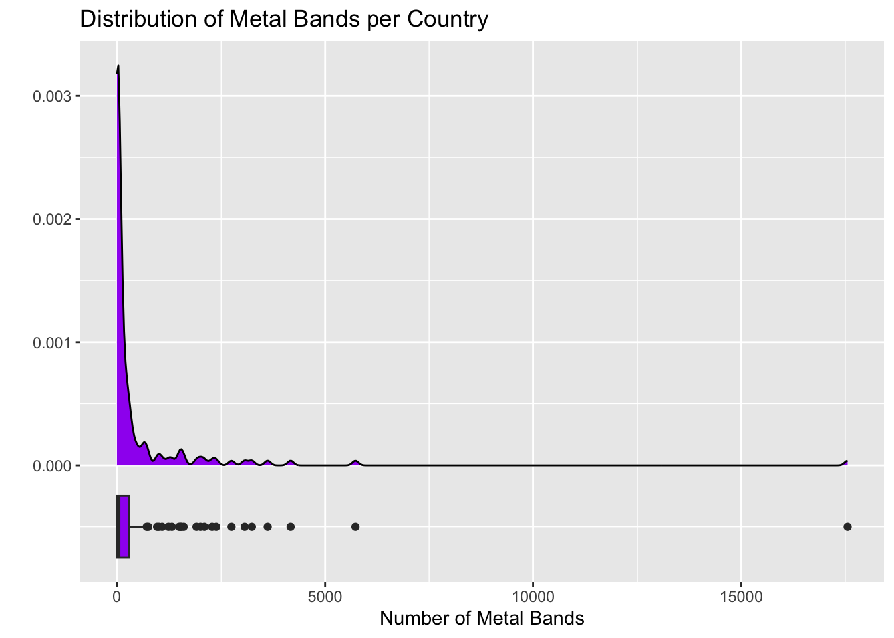

In this notebook, we’ll explore a couple of data sets that Richard McElreath uses in his popular textbook, Statistical Rethinking. The wafflehouse data set includes state-by-state information including populations, marriage and divorce rates, Waffle House counts, and more. The metal data set includes country level measurements on population, happiness, and number of metal bands originating from the corresponding country. I’ve set up this notebook to read in the data and draw a couple of pictures – feel free to mess around and make changes.
Don’t worry about breaking the notebook or writing code that doesn’t work. These things will happen – you’ll learn about how to use R to analyze data, draw pictures, and more over the course of our semester together. For now, you might stick to changing the variables included in a plot, or changing the plot type – you can find different available plotting layers here. If you’d like to try something more adventurous…go for it!
Before you move on, add yourself as the author to this notebook, by changing the author: line in the header at the top of this document. Once you’ve done that, click the blue Render arrow to generated a beautiful version of this notebook in HTML – it will open in the lower-right pane of the RStudio window. Later, if you’d like, you can check out the available document themes and change the theme: to use your favorite option. You’ll notice the changes in your rendered document. Move on for now.
Waffle House Data
Let’s take a look at the first few rows of the data set and inspect the variables available below.
In McElreath’s text, he looks at the relationship between divorce rates and number of Waffle Houses per capita. The plot below is set to examine divorce rates and raw Waffle House count.
wafflehouse %>%ggplot() +geom_point(aes(x = WaffleHouses, y = Divorce),color ="purple") +geom_text(aes(x = WaffleHouses, y = Divorce, label = Loc), alpha =0.75, hjust =1.25, vjust =1.25) +labs(title ="Divorce Rate and Waffle House Count",x ="Waffle House Count",y ="Divorce Rate",color ="Type of State")
Use the code chunk below to copy the plot and change the color of the points in the plot to a color you prefer.
Try changing the color of the points to indicate whether the state is in the South or not. (Hint. You’ll need to change where you are setting the color)
Change the color of the text to indicate whether or not the state is in the South.
Reproduce McElreath’s plot by replacing x = WaffleHouses with x = WaffleHouses/Population
Note
WaffleHouses and Population are both columns in the wafflehouse data frame (table).
Change the plot title and axis labels to more accurately describe your updated plot.
Provide your interpretation of the resulting image – what do you see?
#Copy and Update the Plotting Code Here...
Provide your own interpretation here…
Additional Waffle House Data Explorations
If you are finding this data set to be interesting, try making some additional explorations here!
Metal and Happiness Data
Similar to the Waffle House data set, let’s begin by taking a look at the first few rows of the metal data frame and identifying the variables available to us.
metal %>%head() %>%kable() %>%kable_styling(bootstrap_options =c("hover", "striped"))
Territory
Bands
Population
Happiness
Afghanistan
2
37466414
2.404
Albania
7
3088385
5.199
Algeria
16
43576691
5.122
Andorra
2
85645
NA
Angola
8
33642646
NA
Argentina
1907
45864941
5.967
I wonder what the distribution of metal bands in a country is like! The plot below looks at the distribution of raw count of metal Bands per country. It includes two visualizations – a density plot and a boxplot.
metal %>%ggplot() +geom_density(aes(x = Bands),fill ="purple") +geom_boxplot(aes(x = Bands, y =-0.0005),fill ="purple", width =0.0005) +labs(title ="Distribution of Metal Bands per Country",x ="Number of Metal Bands",y ="")
Warning: Removed 29 rows containing non-finite outside the scale range
(`stat_density()`).
Warning: Removed 29 rows containing non-finite outside the scale range
(`stat_boxplot()`).

Play around with the colors in the plot. Explore the difference between color and fill. Change the axis labels or plot title.
# Make changes to the plot here...
The plot above isn’t quite “fair” – why not? Adjust the plot so that, rather than plotting pure metal band counts, you are plotting metal bands per capita. You can do this similarly to the way that we updated the Waffle House plot above. You’ll benefit by changing the y value and width on the boxplot to something around -1000 and 1000, respectively. Adjust the title and axis labels as well.
#Update the plot here!
The Happiness column is an interesting one! I wonder if large countries are happy. The plot below is set up to answer this question.
metal %>%ggplot() +geom_point(aes(x = Population, y = Happiness)) +labs(title ="Happiness and Population",x ="Population",y ="Happiness Rating")
Warning: Removed 57 rows containing missing values or values outside the scale range
(`geom_point()`).
Now try plotting the Happiness against the number of metal bands per capita in the code cell below. What do you notice?
#Add your plot here!
Additional Metal Explorations
If you found the metal data set interesting, feel free to include additional explorations below.
Summary
In this notebook, we explored a couple of data sets and discovered some interesting findings! It is probably clear that these findings are coincidental, and that there are hidden variables which are driving the phenomena we saw. The field of statistics gives us the tools to determine whether phenomena are coincidental, present only in our observed sample data, or are likely to be descriptive of a population-level insight/effect.
We’ll start our semester by learning how to describe observed sample data (descriptive statistics), and then move to using our observed sample data to better understand the populations that our samples are representative of (inferential statistics). Along the way, we’ll work with real data sets whenever possible, and we’ll learn about how we can use R to conduct our analyses. Don’t worry if the code from today was all brand new to you and you’re still confused by it – that’s expected and we’ll learn R from scratch during our time together.
If you were able to do any of the following with today’s notebook, then you are ahead of where I expected.
Changed an axis label or plot title
Changed the color of part of a plot
Swapped out a variable used in a plot
If you experienced any of the following, then you are exactly where you should be.
Thought – oh, that’s interesting…
Wondered what if… or why…
Wrote/changed code that didn’t work or didn’t do what you thought it would
Next Steps…
Our journey into Statistics and R starts now. Please complete the interactive notebook titled Topic 1: An Introduction to Data and Sampling prior to our next class meeting.